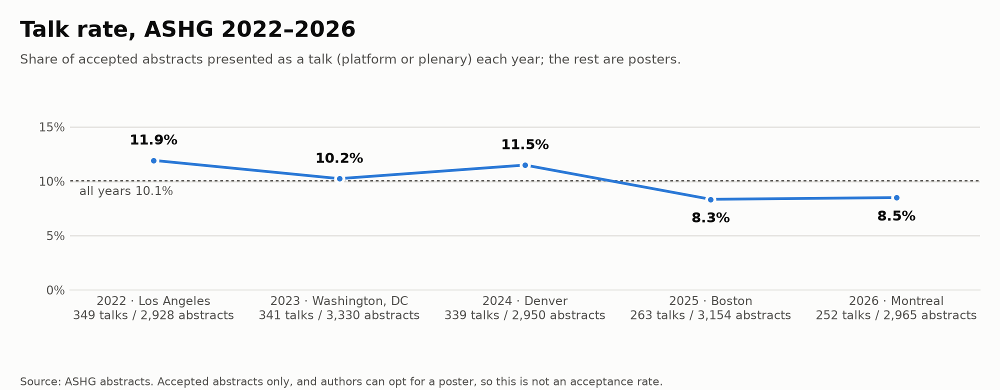

Methods and caveats
What the numbers mean
- Accepted abstracts only. The booklets list abstracts that were accepted, and authors can ask for a poster. “Talk rate” is the fraction of accepted abstracts presented as a talk (platform or plenary); it is not an acceptance rate or a quality score.
- Associations, not causes. A phrase that is common in talks may simply mark a field or a large consortium that tends to get talks; it does not make an abstract more likely to be picked.
- Small numbers are noisy. Every share comes with a 95% interval; wide intervals mean little can be said.
- What is not shown. The site never names an institution, country, metro area or person for having no talks: those rows are left out of the tables and figures here. World regions are shown in full. The complete aggregate tables are in the repository.
- Not every abstract is matched. Institution, metro and country tables only count abstracts whose affiliations could be matched; see below.
Match rates
The share of abstracts whose author could be placed. An abstract counts as matched if at least one of the author's affiliations resolves to one of the 213 listed institutions (or a metro area, or a country). Unmatched abstracts still count toward the totals, the talk rate and the phrases, but drop out of the institution, metro and country tables. The institution list was built from the institutions with the most abstracts, so unmatched abstracts come mostly from institutions with fewer: rankings describe the listed institutions, not everyone. In 2026 fewer affiliations matched (63% of first authors), so its institution and metro tables cover fewer abstracts. Senior-author rates are over abstracts not cut off in the booklet.
| Year | Abstracts | First author | Senior author | ||||
|---|---|---|---|---|---|---|---|
| Institution | Metro | Country | Institution | Metro | Country | ||
| 2022 | 2,928 | 69% | 66% | 100% | 69% | 66% | 99% |
| 2023 | 3,330 | 71% | 67% | 100% | 70% | 66% | 100% |
| 2024 | 2,950 | 72% | 68% | 100% | 72% | 68% | 100% |
| 2025 | 3,154 | 70% | 67% | 93% | 71% | 67% | 93% |
| 2026 | 2,965 | 63% | 61% | 94% | 64% | 61% | 94% |
| All years | 15,327 | 69% | 66% | 97% | 69% | 66% | 97% |
Talk rate by year
The share of accepted abstracts presented as a talk ranges from 8.3% to 11.9% by year. Every talk rate on this site is compared with its own year's rate, or with the pooled rate for all years.

How it's built
- Parsing. Text is extracted with PyMuPDF and split into abstracts using each booklet's layout (session headers, titles, author blocks, “Abstract:” labels). Every parsed abstract is checked against the booklet's table of contents, and a hand-checked sample is used as a test set. Abstracts cut off mid-text in a booklet count toward totals and first-author credit, but not senior-author credit or the text analyses.
- Institutions. A hand-curated list of 213 institutions and their spelling variants. Schools fold into their university (except Harvard Medical School); NIH institutes fold into NIH; hospitals and independent institutes stay separate.
- Countries and regions. Each author's country comes from the location at the end of their affiliations (“Seoul, Korea, Republic of”; “Boston, MA”), which nearly every affiliation in 2022–2024 has. When there is none (most of 2025–2026), it comes from the resolved institution, else from country, demonym or city names in the affiliation (“Seoul National University”), else from a hand-checked list of the remaining affiliation strings (mostly companies and smaller institutes; LLM-labeled, then spot-checked). Countries are grouped into UN M49 regions, with the Americas split into Northern America and Latin America and the Caribbean. An author with affiliations in several countries counts in full for each, so an abstract can count for several countries (once per region), and rows can add up to more than the total. Because the first source that finds a country is used, an affiliation without its own location can be missed when another one has it; nearly every 2022–2024 affiliation gives a location, so this is rare there. Every 2025 first- and senior-author affiliation was reviewed (LLM pass, each correction checked by hand), and those hand-checked countries take precedence. The 2026 affiliations the other rules miss were labeled the same way (two independent LLM passes, disagreements checked) but not yet reviewed by hand. “Hong Kong, China” counts as Hong Kong only.
- Metro areas. Each institution is mapped by hand to a metro (US Census metropolitan areas, with San Francisco + San Jose combined as the SF Bay Area and Durham–Chapel Hill + Raleigh as the Research Triangle). Institutions with sites in several metros are left out.
- Center of mass. Each abstract sits at its first author's metro area (coordinates of the main city; an abstract with first authors in k metros counts 1/k in each). The center is the geographic midpoint: the mean of those points as 3D unit vectors, projected back to the surface. North America counts US and Canadian metros only (about four in five US and Canadian abstracts have one). Worldwide, an abstract with a country but no metro sits at the center of that country's placed abstracts that year, so every country keeps its full weight. North America is the UN region (US, Canada, Bermuda; Mexico counts as Latin America). Removing host-city first authors drops abstracts with any first author in the host metro; local groups at institutions without a metro stay in. The 95% ranges are from 2,000 bootstrap resamples of abstracts.
- Senior authors. The last listed person (consortium names skipped). Within a year, the same person = same first + last name, and for common surnames (seen with 5+ different first names) also a shared institution. Across years the 2022–2024 booklets give only initials, so the same person = same first initial + last name; surnames seen with 5+ different initials need a shared institution, and two different spelled-out first names (2025–2026) are never merged unless one is a short form of the other (Alex, Alexander).
- Phrases. 1–3-word n-grams from the abstract text, appearing in at least 5 talks (or the equivalent share of posters). Each gets a talk-vs-poster odds ratio with +0.5 smoothing and a 95% CI, ranked by z-score. Phrases that share a word or are an acronym of each other and appear in mostly the same abstracts (Jaccard ≥ 0.45; exact acronyms like “QTLs” always) form one group, shown under its best-ranked member. A narrower phrase stays separate from a broader one that contains it when the broader one carries its own signal: every abstract mentioning “chromatin accessibility” also mentions “chromatin” (Jaccard 0.43), but most “chromatin” abstracts are about something else, and those still lean toward talks (2022–2026 talk rate 15.7% for “chromatin” without accessibility, 21.9% with “chromatin accessibility”, 9.4% without “chromatin”).
- All years. Institution, place and author talk rates pool the counts from every year. Phrase odds ratios across years are Mantel–Haenszel estimates stratified by year (each year's 2×2 table, +0.5 in every cell, Robins–Breslow–Greenland variance), because the baseline talk rate differs by year.
- Intervals. Talk rates use 95% Wilson intervals.